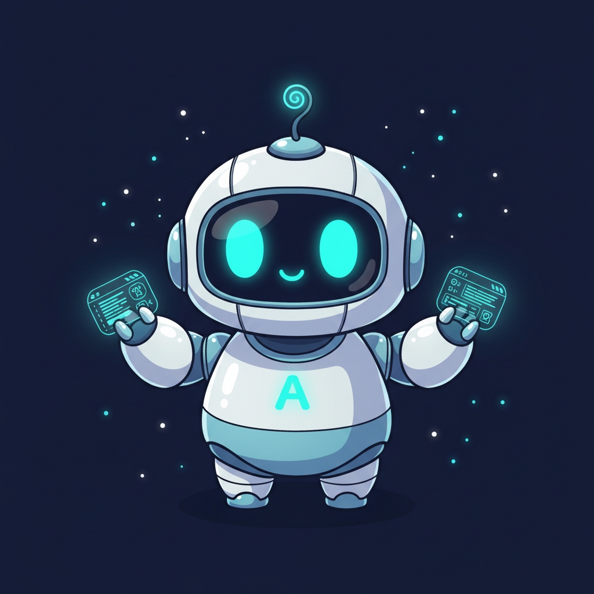
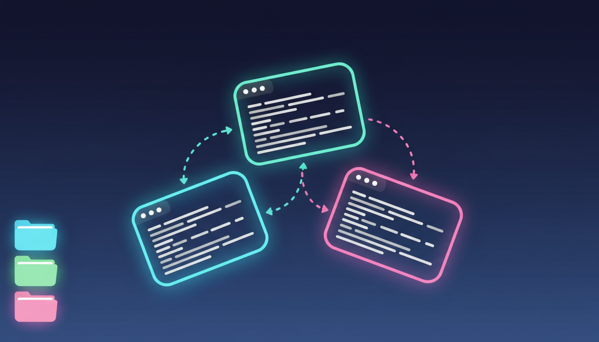
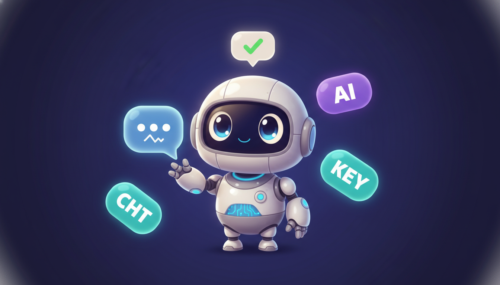
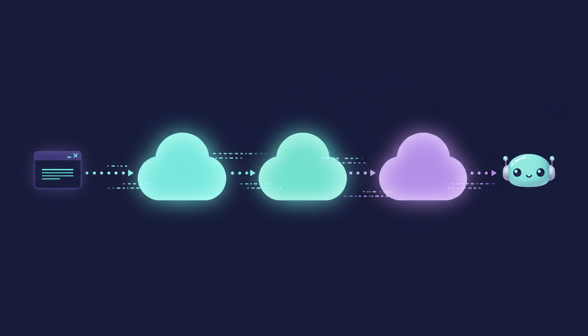
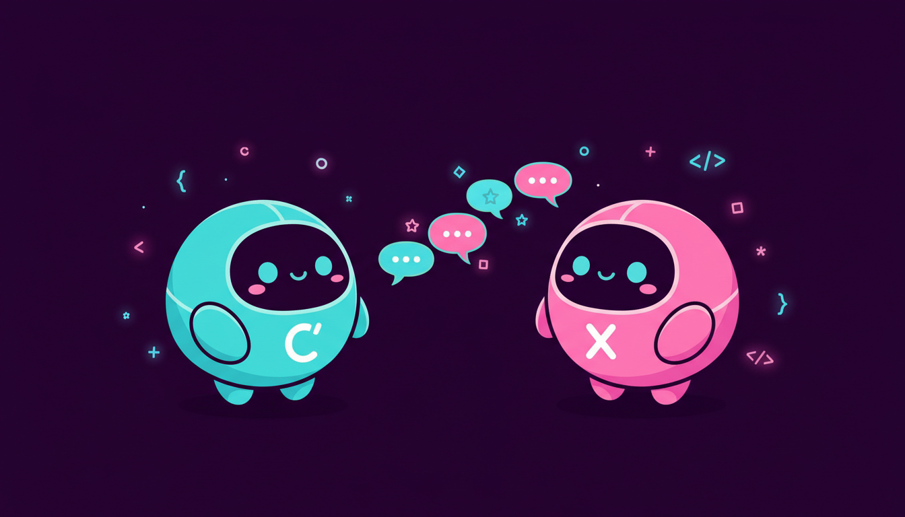
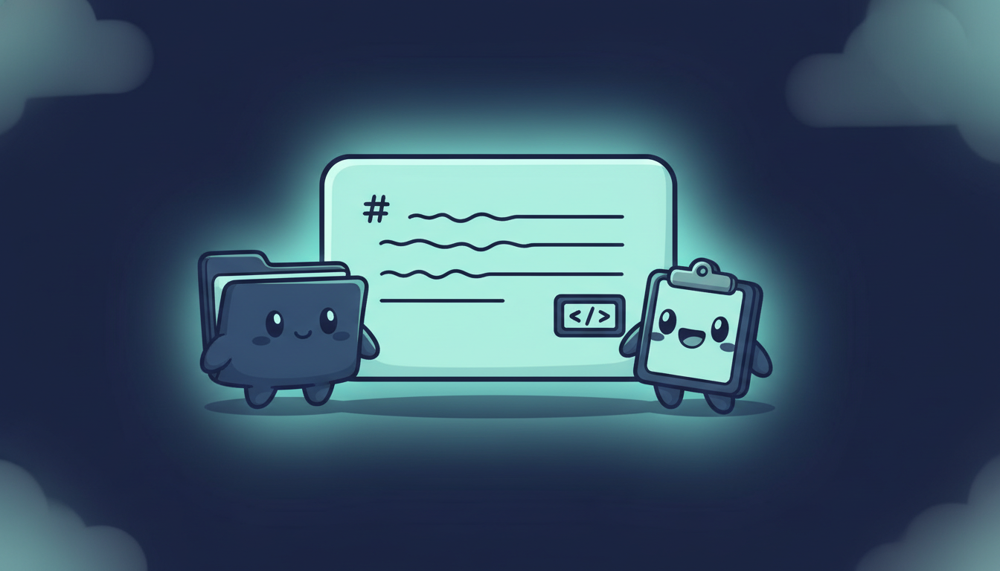
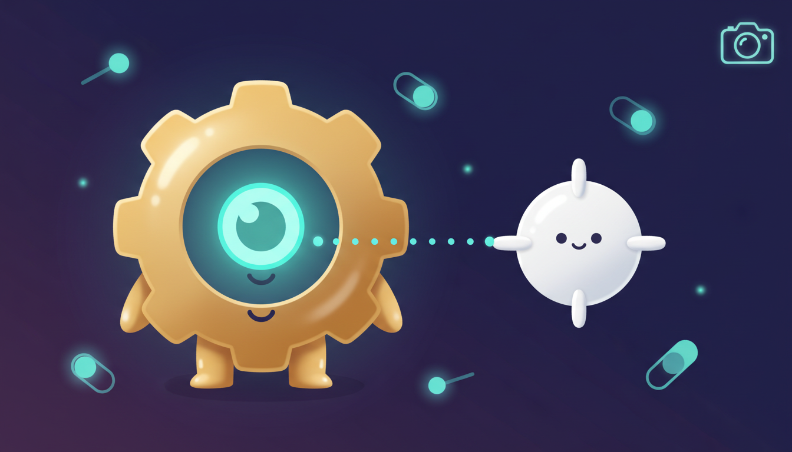
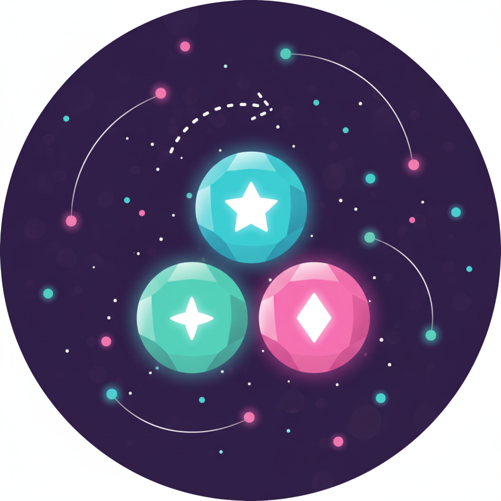
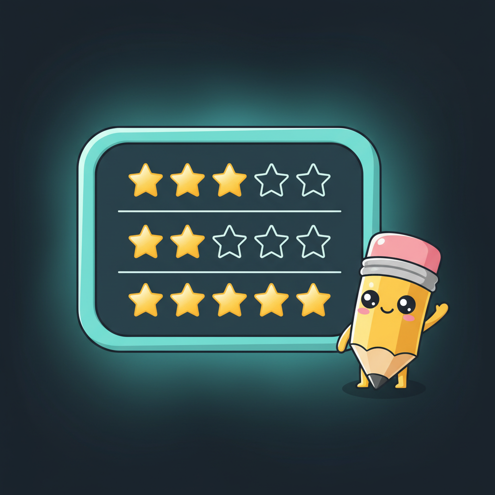

윈도우 데스크톱을 AI에게 맡기세요. 여러 CLI 터미널, AI 비서, 작업 자동화, 메모, 하네스 시각화를 한 앱에서.
설치 파일 받기 (x64)여러 프로젝트와 여러 CLI 세션을 한 화면에서 나란히 다룰 수 있어요.

작은 채팅 창 하나로 터미널 입력·키 전달·AI 채팅을 모두 처리해요. 3가지 모드를 한 창에서.

터미널을 코드로 제어하고, 여러 AI 에이전트를 터미널 입출력으로 이어 붙일 수 있어요.


다른 도구를 띄우지 않고도 프로젝트 파일을 둘러보고 읽을 수 있어요.

터미널·LLM 공급자를 설정하고, 다른 윈도우의 글자를 캡처할 수 있어요.

하네스 설정을 보기 좋게 펼쳐 보고, 내장 AI로 직접 분석할 수 있어요.


마우스 클릭, 키보드 입력, 글자 캡처, 스크린샷, UI 요소 검사 — Claude Code에서 CLI 스킬로 모두 호출 가능.
WM_COPYDATA + 메모리 매핑 파일로 CLI↔GUI 통신. 보내고 잊거나 응답을 폴링할 수 있어요.
윈도우 상태, 작업 공간 그룹, 터미널 탭, 클립보드 기록, LLM 설정 — 모두 저장하고 시작 시 복원.
개발 중에 새로 들어온 기능들을 사용자 관점에서 정리했어요.
AgentZero-vX.X.X-Setup.exe 를 받으세요C:\AgentZero)AgentZeroWpf.exe 를 실행하면 시작됩니다